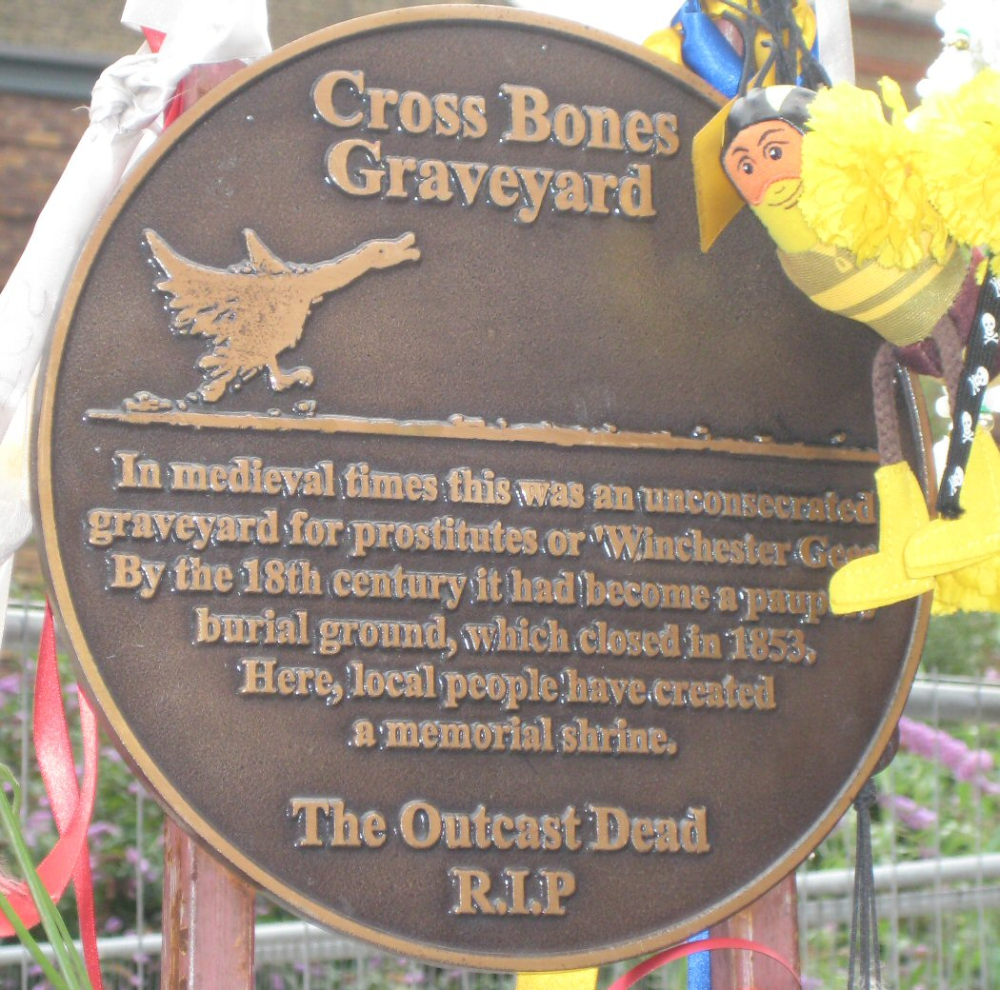
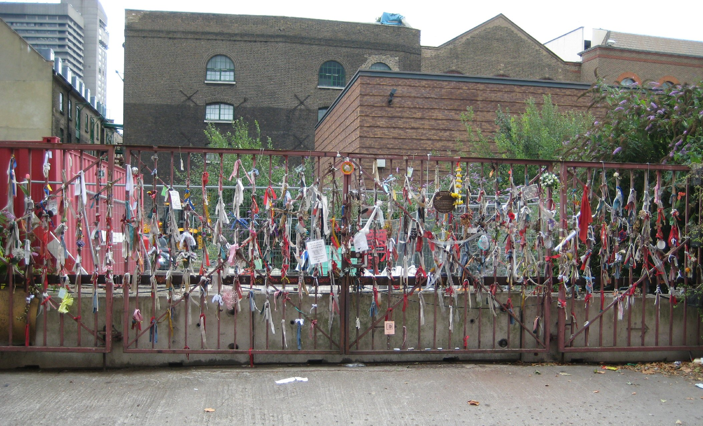
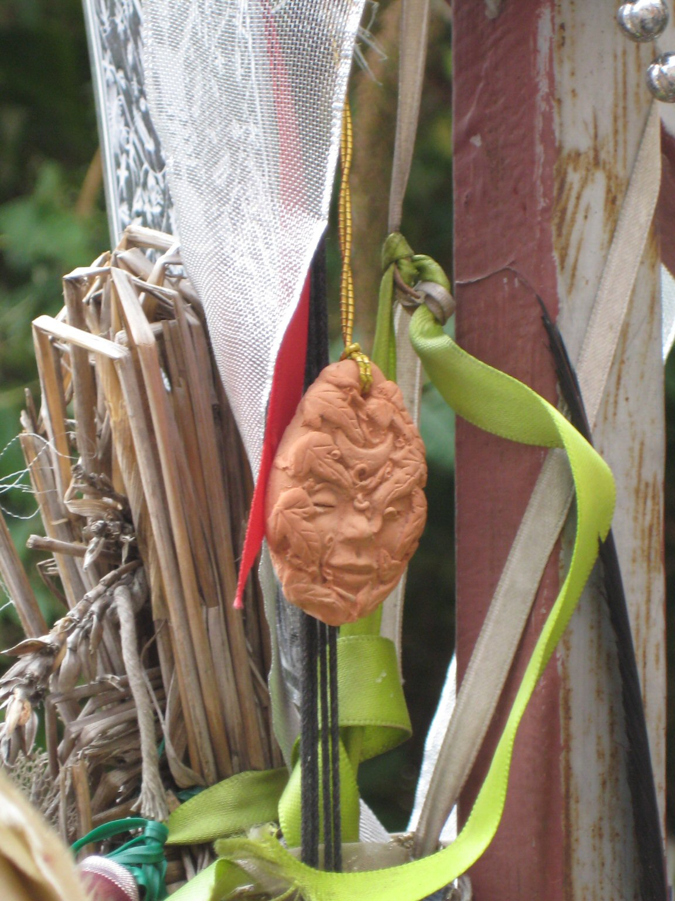
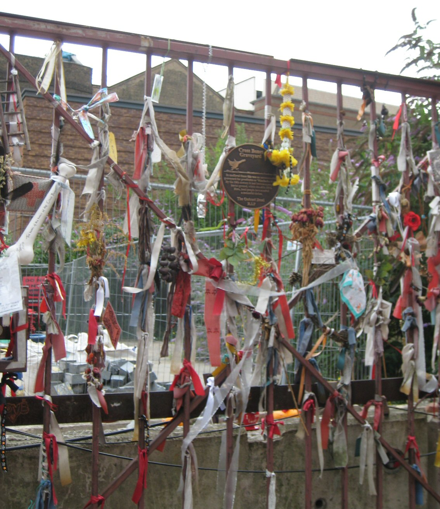
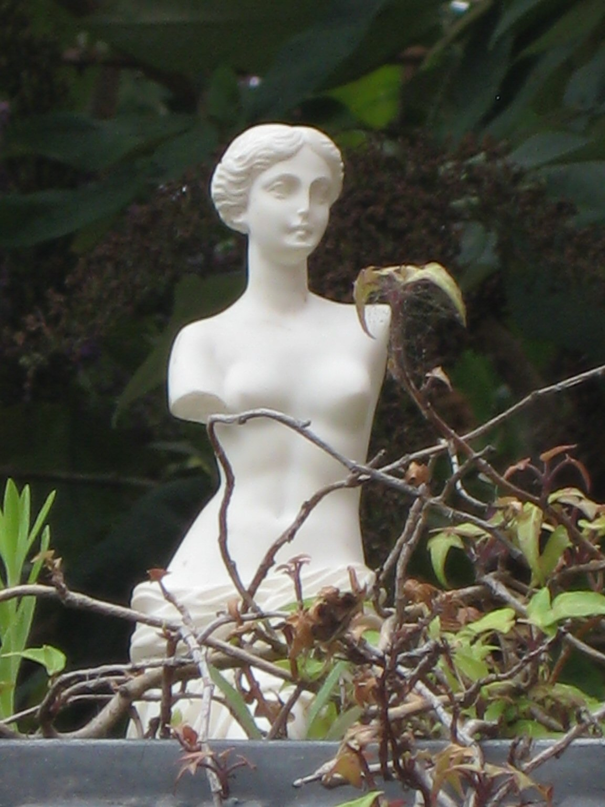

Wednesday, August the 20th, 2008
back to: title, date or indexes
The first in our Occasional Graveyards series is a shrine to a graveyard rather than a graveyard as such. You can read about the Cross Bones Graveyard here. It is about five minutes walk from the ResonanceFM studio on Borough High Street, so next time you listen to Hooting Yard On The Air, bear in mind that Mr Key may well have been pondering the Eternal Verities at the shrine just beforehand, or possibly soon afterwards. The photographs were taken by Pansy Cradledew, who has not posted them on a flickr page, because she's not that kind of girl.




